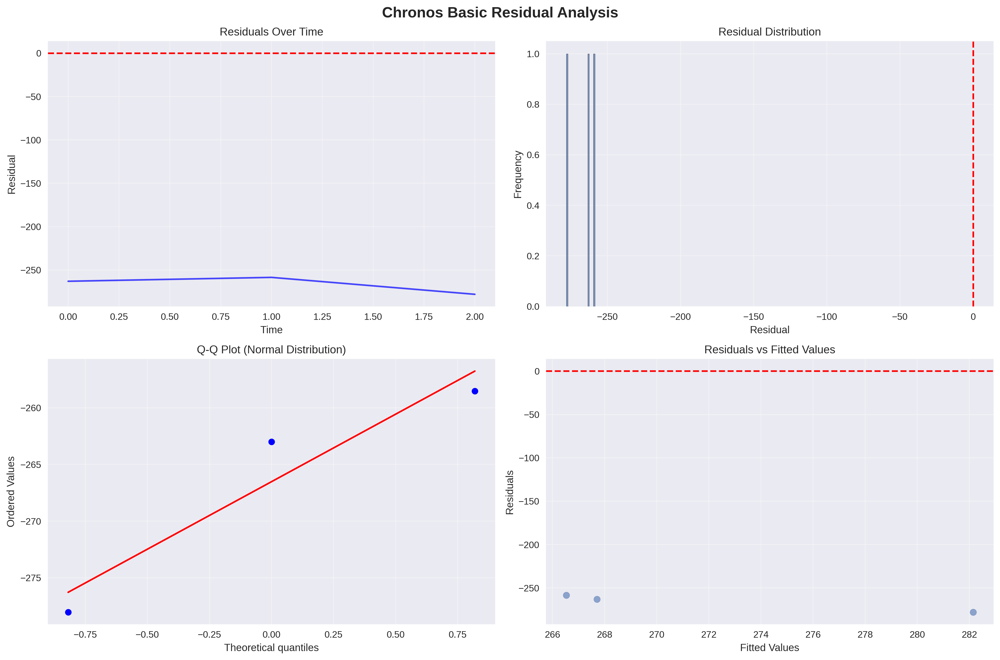

Chronos Basic Forecast Report
Performance Metrics
Mean Squared Error (MSE): 71104.391890
Root Mean Squared Error (RMSE): 266.654068
Mean Absolute Error (MAE): 266.523454
Mean Absolute Percentage Error (MAPE): 5202.95%
Forecast Results
Residual Analysis

Summary
This report shows the forecasting performance of the Chronos Basic model.
Total predictions: 3
Training data points: 11